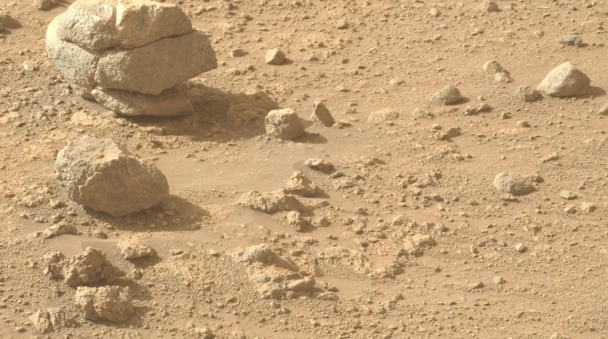

Oppo A6c pricing and memory variants have reportedly surfaced online ahead of the smartphone’s expected India launch.

Oppo is reportedly set to launch the new Oppo A6c in India soon as part of its budget A-series lineup. According to a report by 91Mobiles, citing industry sources, the smartphone could debut this week or next week. The Oppo A6c is tipped to start at Rs. 13,999 for the 4GB RAM + 64GB storage variant, while the 4GB + 128GB model may be priced at Rs. 16,999. The handset has already launched in select international markets and is expected to strengthen Oppo’s presence in India’s affordable smartphone segment.
Oppo Pad 6 has been unveiled with the MediaTek Dimensity 9500s chipset and a massive 10,420mAh battery.

Oppo has launched the new Oppo Pad 6 in China as the successor to the Oppo Pad 5. The tablet features a 12.1-inch LCD display with a 144Hz adaptive refresh rate and is powered by the MediaTek Dimensity 9500s chipset paired with up to 16GB RAM. It runs on ColorOS 16 based on Android 16 and includes an 8-megapixel rear camera. Oppo has equipped the tablet with a massive 10,420mAh battery aimed at extended productivity and entertainment usage. The Oppo Pad 6 targets premium tablet users with high-performance specifications.
Redmi Note 15 5G and Redmi 15 5G have reportedly become more expensive in India following recent price revisions.

Xiaomi has reportedly increased the prices of the Redmi Note 15 5G and Redmi 15 5G in India by Rs. 2,000 across multiple variants. According to tipster Sanju Chaudhary, the Redmi Note 15 5G now starts at Rs. 26,999 for the 8GB + 128GB model, while the 8GB + 256GB variant is priced at Rs. 29,999. The Redmi 15 5G’s 6GB + 128GB option reportedly costs Rs. 20,499, whereas the 8GB + 128GB and 8GB + 256GB variants are said to retail at Rs. 22,499 and Rs. 24,499, respectively.
Asus has launched the Asus VM441 AiO in India, featuring a 24-inch display and Qualcomm’s Snapdragon X processor.

Asus has launched the Asus VM441 AiO in India. The new Copilot+ PC is powered by Qualcomm’s Snapdragon X processor and includes a dedicated Hexagon NPU capable of delivering up to 45 TOPS of AI performance. The desktop features a 24-inch display and comes in two storage variants. Asus has also equipped the VM441 AiO with 3W stereo speakers backed by Dolby Atmos support for an immersive audio experience. The latest all-in-one PC is aimed at users seeking AI-powered productivity and entertainment in a compact desktop form factor.
Moto G37 and Moto G37 Power are now available for purchase in India, alongside the newly launched Moto Buds 2.

Motorola has started sales of the Moto G37, Moto G37 Power, and Moto Buds 2 in India. Introduced last week as part of Motorola’s latest G-series lineup, both smartphones are powered by the MediaTek Dimensity 6400 chipset and run Android 16. The devices feature a 13-megapixel rear camera setup, while the Moto G37 packs a 5,200mAh battery. The G37 Power offers a larger 7,000mAh battery for extended usage. Meanwhile, the Moto Buds 2 arrive with dual 11mm dynamic drivers aimed at enhanced audio performance.
Oppo Enco Air 5s unveiled with 12mm dynamic drivers and up to 48 hours of total battery backup

Oppo has launched the new Oppo Enco Air 5s in China alongside the Oppo Reno 16 lineup. The semi-in-ear TWS earbuds feature Active Noise Cancellation (ANC), spatial audio support, AI-powered call noise reduction, and dual-device connectivity. Oppo has equipped the Enco Air 5s with 12mm dynamic drivers for enhanced audio performance and an IP55-rated build for dust and water resistance. The earbuds are claimed to offer up to 48 hours of total battery life with the charging case. The Enco Air 5s are available in three colour options in the Chinese market.
Xiaomi 17T teaser microsite confirms Amazon India availability and highlights Zeiss-powered telephoto camera capabilities ahead of launch.

Xiaomi has confirmed that the upcoming Xiaomi 17T will be available via Amazon India following its launch in the country. An official microsite reveals the smartphone will feature a Zeiss-tuned telephoto camera with 5x optical zoom, 10x optical-quality zoom, and up to 120x AI-enhanced digital zoom. The camera supports a 23mm–115mm equivalent focal range and an f/3.0 aperture. Xiaomi will unveil more camera details on May 26. The Xiaomi 17T and Xiaomi 17T Pro are set for a global debut on May 28, while the standard model launches in India on June 4.
SpaceX’s Upgraded Starship V3 Launches but Exposes Engine and Booster Shortfalls

SpaceX launched the first flight of its third‑generation Starship V3 from Starbase Pad 2 on May 22, 2026, debuting redesigned Raptor 3 engines and new pad hardware. The upper stage deployed 20 mock Starlink satellites and two camera-equipped craft that returned heat‑shield imagery, completed reentry maneuvers, and splashed down in the Indian Ocean. A Raptor on the upper stage shut down during ascent and one Super Heavy booster engine and boost‑back burns failed, sending the booster into the Gulf of Mexico. SpaceX and analysts said payload and heat‑shield goals were met, but engine reliability and precision recovery need more flights. The test comes as SpaceX files for an IPO and seeks NASA confidence for Artemis lunar missions
Anthropic’s Claude Mythos Finds Over 10,000 High‑Severity Flaws, Exposes Patch Backlog

Anthropic said Project Glasswing partners using the Claude Mythos Preview uncovered over 10,000 high‑ or critical‑severity software vulnerabilities in about a month. Independent reviewers sampled 1,752 candidates and judged ~90.6% valid, confirming 1,094 as high‑ or critical‑severity, showing a high true‑positive rate. Despite validated bugs, fewer than 100 confirmed patches had been deployed, straining vendors and open‑source maintainers. Mythos has produced verifiable fixes and CVEs for some issues (notably wolfSSL’s CVE‑2026‑5194, OpenBSD, and FFmpeg), and helped stop a $1.5M fraudulent wire. Anthropic limits access, pledges up to $100M in compute credits/grants, and negotiates controlled expansion amid regulatory pressure.
Huawei Unveils High-Capacity SSDs Using Die-on-Board Packaging

Huawei presented the drives at its ID Forum held May 21–23, showing 61.44TB and 122.88TB enterprise SSDs and saying a 245TB variant is in development.
The drives use Die-on-Board (DoB) packaging, which mounts raw NAND dies directly on the SSD printed circuit board instead of using traditional packaged chips.
Huawei says DoB yields about a 33% capacity-density gain and that it has solved key thermal and signal-integrity challenges on products such as the OceanDisk 1800.E.
The new SSDs use YMTC’s Xtacking 4.0 NAND, which is currently limited to roughly 232 layers, so Huawei’s approach increases usable capacity without access to higher-layer 3D NAND from foreign suppliers.
Company claims about performance, density and system integration for AI inference and large data arrays are self-reported and not independently verified, and the move highlights how Chinese firms are engineering around export limits with possible effects on data-center design and the semiconductor supply chain.
NASA Just Released One of the Most Detailed Maps of the Night Sky Ever

The skies at night have received their most complete representation ever through the eyes of NASA's Transiting Exoplanet Survey Satellite (TESS). This amazing image is a compilation of images taken over eight years of continuous observation. The representation includes 96 sectors taken from April 2018 through September 2025, where there are over 6,000 colourful dots indicating the presence of either known or potential planets revolving around different stars.
Airtel’s Priority Postpaid Service Reportedly Faces Regulatory Scrutiny Over Net Neutrality Concerns

Bharti Airtel's new priority network service for postpaid users has reportedly come under scrutiny. The service, launched in India earlier this week, aims to provide access to fast lane connectivity even in high traffic demand situations, leveraging 5G network slicing. According to a report, the central government and the Telecom Regulatory Authority of India (TRAI) are examining whether the offering complies with the country's net neutrality framework. Further, they are also deliberating whether it could adversely impact service quality for prepaid subscribers.
Gemini Users Left Frustrated as Google Shifts to Compute-Based Usage Limits
Google is quietly restructuring the Gemini app's usage limit. After adding a weekly limit and releasing the new usage dashboard earlier this week, the Mountain View-based tech giant is now adopting a compute-based usage limit approach. Ditching the existing message-based count means users' usage will now be measured by the number of tokens they consume, which can significantly reduce their actual usage. Just hours after the change was rolled out, several users took to social media to complain that they hit the rate limit much sooner than before.
Google's Pixel Glow Feature for the Google Pixel 11 May Have Accidentally Leaked During Google I/O 2026
Google is believed to be developing a new notification feature called Pixel Glow for future Pixel smartphones. Speculations surrounding the feature started appearing last month, but most recently, at the Google I/O 2026 event, Google appeared to have teased the Pixel Glow feature. It is likely to work alongside Gemini. The Pixel Glow feature is expected to debut alongside the Pixel 11 series, which will go official later this year with the Tensor G6. The feature was first discovered in the Android code.
Google Might Sell Over 2 Million Android XR-Powered Smart Glasses This Year
Google and Samsung showcased their next-generation smart glasses at the Google I/O 2026. Although the two companies plan to release both audio AI glasses as well as display-equipped smart glasses, the first will be released in the market this year. Just days after the showcase, a market intelligence firm has claimed that Google could sell more than two million units of its Android XR-powered smart glasses. If this happens, the Mountain View-based tech giant could also become the second biggest player in the market, right behind Meta.
Mysterious Stacked Rocks Spotted by NASA Perseverance Rover on Mars

NASA's Perseverance rover still manages to surprise us. On May 13, 2026, Sol 1,859 of its mission, it snapped a very eye-catching photo of what looks like three rocks placed one over the other, stacked neatly as if arranged, and then sitting by themselves out in the middle of Mars dusty, reddish ground. The picture seems almost too tidy to be mere chance, so people quickly started wondering. Are those really three separate rocks, or could it be some other arrangement entirely?
Motorola Edge 70 Pro+ Camera Details Confirmed, Will Arrive in Three Colourways
Motorola Edge 70 Pro+ is scheduled to launch in India soon, the tech firm recently confirmed. The upcoming smartphone will join the Edge 70 series as the fourth model in the lineup, which also includes the Edge 70, Edge 70 Pro, and Edge 70 Fusion. Recently, a dedicated microsite for the debut of the Motorola Edge 70 Pro+ was made live in the country. Now, the microsite has been updated to reveal additional details about the upcoming handset, including the names of its three colour options and the camera configuration. One of the three cameras of the phone is teased to offer an 81mm focal length.
Realme Buds Air 8 Pro Launched in India With Up to 55dB ANC, Up to 50 Hours of Total Battery Life

Realme has launched the Realme Buds Air 8 Pro in India alongside the Realme 16T and Realme Watch S5. The new true wireless stereo (TWS) earphones arrive with a dual-driver audio system, LHDC 5.0 Hi-Res wireless audio support, and adaptive active noise cancellation (ANC). The company has also equipped the earbuds with a six-microphone calling system, Bluetooth 6.1 connectivity, and low-latency gaming features. The Buds Air 8 Pro further offers IP55-rated dust and water resistance, wear detection support, fast charging capabilities, and up to 50 hours of total battery life.
MacBook Pro OLED Panels to Enter Mass Production Next Month

Apple is expected to launch its next-generation MacBook Pro model later this year or early 2027. The rumoured laptop lineup from the Cupertino-based tech giant is said to feature an OLED display, a first for the MacBook Pro series. However, due to rumoured supply chain constraints and memory component shortages, Apple's rumoured MacBook Pro with an OLED display is facing delays. Now, a report claims that the MacBook Pro's OLED panels are set to enter the mass production phase next month, as Samsung is preparing to start shipping the panels to Apple soon. The new laptop is rumoured to be powered by Apple's M6 processor.
Webb Separates Morning and Evening Clouds on Hot Jupiter WASP‑94A b

The Science paper published Thursday reports that JWST’s NIRISS instrument captured different transmission spectra for WASP‑94A b’s leading (morning) and trailing (evening) limbs, revealing a persistent cloud cycle.
Data and 3D circulation models show mineral condensate clouds (magnesium silicates, iron and sulfides) form on the cold nightside, are carried to the morning limb by equatorial winds, and then evaporate on the hot dayside because of ~450 K temperature contrasts.
When the team analyzed the clear evening limb separately they found much lower heavy‑element abundances than earlier Hubble‑era, limb‑averaged results, revising oxygen and carbon levels to about five times Jupiter’s instead of hundreds of times.
The authors report similar cloud‑cycling signatures on two other hot Jupiters, WASP‑39 b and WASP‑17 b, and say larger JWST programs and updated models are now underway to test how common this biasing weather is across exoplanets.
The finding shows that treating tidally locked exoplanet atmospheres as uniform can distort chemical and formation inferences, and it gives astronomers a practical method—limb‑resolved transit spectroscopy—to reduce that bias for low‑density gas giants.
Kawasaki and Nvidia Open San Jose Physical AI Robotics Center

Reporting identifies a new Kawasaki Physical AI Center in San Jose that brings Kawasaki and Nvidia together to combine physical robots with Nvidia’s simulation tools.
The initiative will focus first on healthcare and personal mobility use cases, with Kawasaki’s four‑legged Corleo mobility robot highlighted as a key test platform.
The San Jose site is described as a demonstration space for U.S. companies and a recruiting hub to expand Kawasaki’s operations and hire local engineering talent.
Microsoft and Fujitsu are named by coverage as partners supplying cloud services and enterprise integration while Analog Devices was also cited in some reports for sensing and component support.
The move builds on existing Kawasaki–Nvidia work, such as AI rail inspection and Kawasaki’s 2025 robotic arm for Dexterity, and signals a push to commercialize simulation-driven robotics in U.S. markets.
SpaceX Files Permits for 10‑Gigawatt Solar Factory Near Austin

SpaceX intends a 10 gigawatt‑per‑year solar cell factory split across two production floors of about 5 GW each.
SpaceX’s recent S‑1 for a Nasdaq listing links the Bastrop expansion and scaled solar manufacturing to the company’s broader capital and growth plans.
The 10 GW figure comes from permit paperwork and does not prove an operational production line, with financing, build schedule, production yield and FCC approvals still unresolved.
SpaceX already operates a large Starlink production hub in Bastrop that employs more than 1,000 people, and local reporting notes significant construction activity and a site footprint that could exceed one million square feet.
If built at scale, the factory would make SpaceX a major U.S. solar‑cell maker and could enable continuous solar power for space‑based AI centers, while also creating new local jobs and raising questions about demand, regulation and technical feasibility.
Anthropic Will Pay SpaceX $1.25 Billion a Month for Colossus Compute

The SpaceX S‑1 filing published May 20 disclosed that Anthropic agreed to pay $1.25 billion per month through May 2029 for access to Colossus and Colossus II compute capacity, with reduced fees during an initial ramp and a 90‑day mutual exit clause.
SpaceX’s Colossus 1 facility in Memphis supplies over 300 megawatts of power and houses more than 220,000 NVIDIA GPUs that Anthropic will use to train and serve its Claude models.
Anthropic told investors it expects roughly $10.9 billion in revenue for the June quarter and an operating profit of about $559 million, a milestone tied to the company’s rapid enterprise adoption and higher usage limits for Claude.
The deal highlights severe industry bottlenecks for high‑density GPU and power capacity and is part of Anthropic’s broader strategy to diversify suppliers with agreements involving AWS, Google, Microsoft and NVIDIA chips.
If run at full rate the contract implies about $15 billion a year for SpaceX, a sum that could materially change its AI business economics and will draw investor and public‑interest scrutiny over concentration and governance risks.
Samsung Readies Compact ‘Pro’ for Galaxy S27 Line, Leaks Say

Multiple outlets reported between May 20 and May 22 that Samsung is developing a fourth Galaxy S27 model called the S27 Pro, expanding the lineup beyond the usual base, Plus, and Ultra phones.
Leaks converge on a 6.47‑inch OLED display for the Pro and claim camera parity with the Ultra, including a reported 200MP primary sensor and 50MP secondary sensors, though exact telephoto details vary between sources.
Tipsters and supply‑chain reports say the S27 Pro will use a top‑tier Snapdragon 8 Elite Gen 6 Pro for Galaxy in many regions, offer at least 12GB of RAM and 256GB storage, and drop S Pen support to keep the body compact.
Price and some hardware specifics remain unconfirmed; several leaks place the Pro around $1,100–$1,200 and point to an official reveal in early 2027, but Samsung has not publicly confirmed the device or specs.
The Pro would signal a strategic shift for Samsung by offering an Ultra‑level experience in a smaller phone, a move shaped by recent sales and pricing trends and by parallel software work such as the One UI 8.5 rollout and One UI 9 testing.
Google Rolls Out Gemini Omni to Let Users Remix YouTube Shorts

YouTube began rolling out the Gemini Omni–powered Shorts Remix feature on May 19, making reimagining tools available in the YouTube app.
The Remix tool lets users restyle clips or insert themselves into eligible Shorts by prompting Gemini to change a video’s style, add or alter people and background elements, or apply specific visual themes.
Creators have control over remixing because they must enable the Remix button for their videos and can opt out of visual remix at any time.
Google says remixed Shorts will carry visible watermarks, SynthID metadata, and links back to the original to mark AI-generated versions and help users trace source material.
The announcement has drawn pushback from creators who say they do not want automated edits of their work and follows recent moves such as OpenAI’s Sora shutdown and YouTube’s expanded takedown and likeness-detection tools that aim to manage misuse..
Samsung Rolls One UI 8.5 to Galaxy Tab S11 Series

Samsung has begun delivering the stable One UI 8.5 build to the Galaxy Tab S11 and Tab S11 Ultra in South Korea, replacing the month‑old tablet beta.
The tablet firmware arrives with build codes X736NKOU5BZE3 for the base Tab S11 and X936NKOU5BZE3 for the Ultra.
One UI 8.5 brings visual polish and new capabilities, most notably Apple AirDrop compatibility, a more customizable Quick Settings panel, and refinements to Galaxy AI features.
Samsung typically expands updates from South Korea to other regions in staged waves, so broader distribution to eligible tablets is expected in the coming days.
Users can check for the update on their Tab S11 series via Settings > Software update > Download and install, and the release follows earlier One UI 8.5 phone rollouts and ongoing One UI 9 beta testing for Galaxy S26 devices..
Samsung Tests One UI 9 on Galaxy S26 FE as S27 Pro and Fold 8 Leaks Multiply

Multiple outlets reported Wednesday that an OTA firmware entry (build S741NKSU0AZE5) and model code SM‑S741N show Samsung is actively testing One UI 9 on the Galaxy S26 FE, which typically precedes a September release for FE models.
Supply‑chain reporting and corroborating leaks say Samsung plans to expand the Galaxy S27 family to four models by early 2027, adding a 6.47‑inch 'S27 Pro' positioned as a compact phone with many Ultra‑class features, though Samsung has not confirmed this lineup.
Leaks describe the S27 Pro as sharing high‑end components with the Ultra, including advanced processors and Privacy Display tech, while omitting S Pen support; these reports remain unconfirmed and sourced to ETNews and industry tipsters.
High‑profile leaks from Ice Universe and others claim the Galaxy Z Fold 8 series may drop Privacy Display and S Pen support and show only modest crease improvements, a developing set of assertions that other specification leaks partly contradict.
Samsung is adjusting pricing now, with confirmed discounts for S25 and S26 flagships during its AI Week sale, a short‑term market move tied to component cost pressures and inventory management that could influence launch strategies.